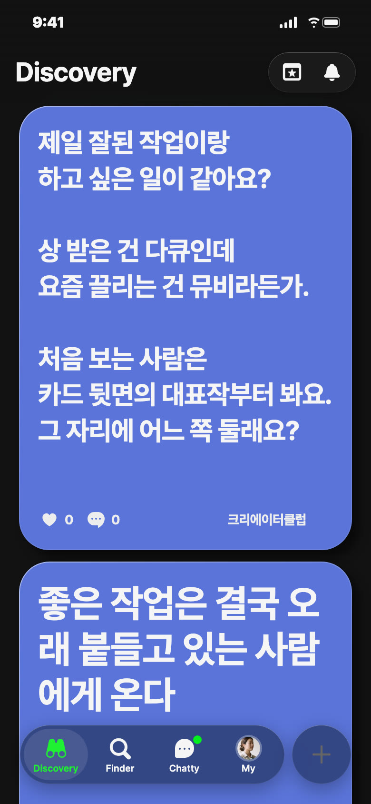
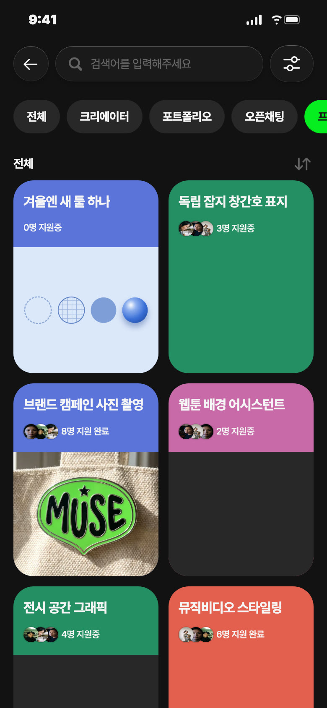
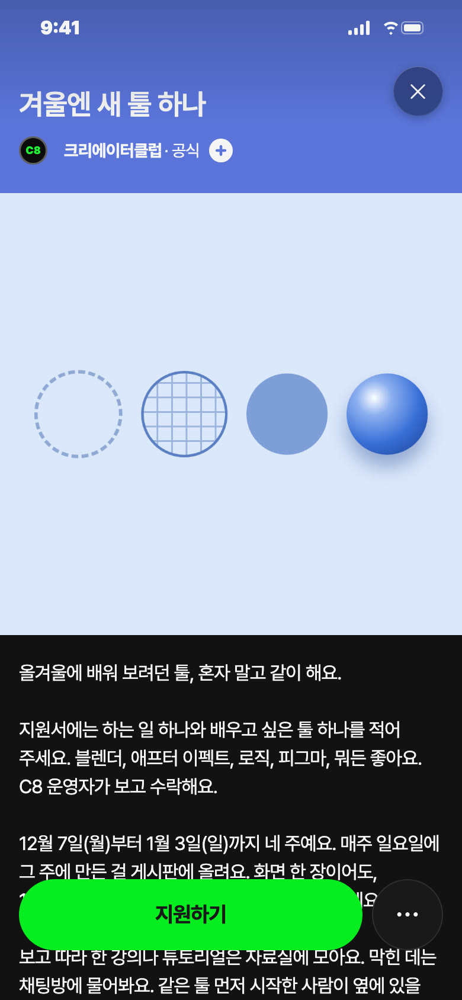
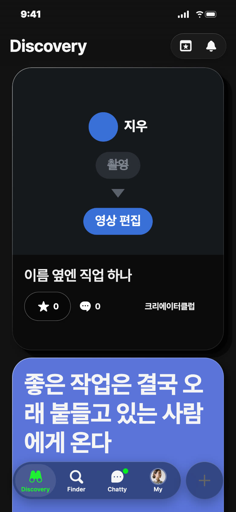
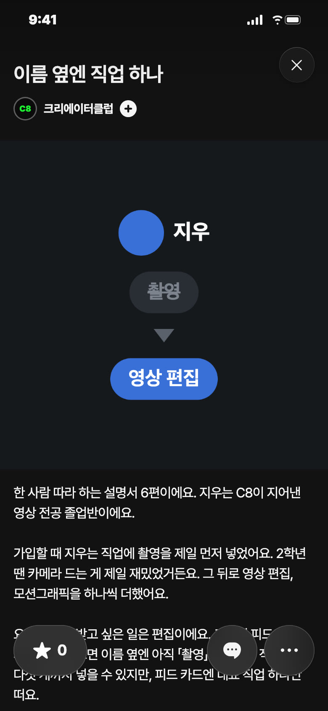

C8 앱 게시 시안 · 11/16(월) — 오늘 추천: 영감 · 일 들어오는 프로필
오늘 추천 · 영감 · 오늘 낮 12시 · 파랑

칸: 일 받기 × 질문 (일 들어오는 프로필 · 대표작)
왜 오늘: 한 주 시작에 내 프로필을 다시 보게 하고, 내일 설명서 3편 「대표작이 없습니다」로 이어져요
보낼 사람: 졸전 끝나고 포폴 정리하는 동기에게 「너 대표작 뭐 둘 거야」
받고 싶은 댓글: 「잘된 건 졸업 다큐인데 하고 싶은 건 뮤비라, 뮤비로 바꿨어요」
영감 글
제일 잘된 작업이랑 하고 싶은 일이 같아요? 상 받은 건 다큐인데 요즘 끌리는 건 뮤비라든가. 처음 보는 사람은 카드 뒷면의 대표작부터 봐요. 그 자리에 어느 쪽 둘래요?
비축 · 프로젝트 · 파랑


칸: 같이 배우기 × 판 열기 (지난 7일 빈 칸)
왜 비축: 수요일 자리 후보(26.46.0 기준) — 운영자·46 출시일은 게시 전 확정
보낼 사람: 블렌더 깔아만 둔 친구에게 「이번 겨울엔 같이 하자」
받고 싶은 지원 채팅: 「일러스트 해요. 블렌더로 제 캐릭터 한 번 세워 보고 싶어요」
제목
겨울엔 새 툴 하나
카테고리
같이 배우기
모집 내용
하는 일·배우고 싶은 툴 하나 · 12/4까지 지원 · 12/7~1/3 네 주 · 매주 일요일 게시판 · 상품 없음
설명
올겨울에 배워 보려던 툴, 혼자 말고 같이 해요. 지원서에는 하는 일 하나와 배우고 싶은 툴 하나를 적어 주세요. 블렌더, 애프터 이펙트, 로직, 피그마, 뭐든 좋아요. C8 운영자가 보고 수락해요. 12월 7일(월)부터 1월 3일(일)까지 네 주예요. 매주 일요일에 그 주에 만든 걸 게시판에 올려요. 화면 한 장이어도, 10초짜리여도 돼요. 일요일마다 일정에 넣어 둘게요. 보고 따라 한 강의나 튜토리얼은 자료실에 모아요. 막힌 데는 채팅방에 물어봐요. 같은 툴 먼저 시작한 사람이 옆에 있을 거예요. 네 주째에 만든 건 각자 포트폴리오에 올려요. 지원은 12월 4일(금)까지, 상품은 없어요. 새해 첫 포트폴리오가 처음 써 본 툴로 만든 거면, 받을 수 있는 일도 하나 늘어요.
비축 · 포트폴리오


칸: 앱 소개 × 일 받기
왜 비축: 설명서 연재 6편 후보(화 12/8 자리) — 3편 11/17·4편 11/24·5편 12/1 다음
보낼 사람: 외주는 편집으로 받으면서 직업엔 촬영만 둔 동기에게 「너 이름 옆에 아직 촬영이야」
제목
이름 옆엔 직업 하나
설명
한 사람 따라 하는 설명서 6편이에요. 지우는 C8이 지어낸 영상 전공 졸업반이에요. 가입할 때 지우는 직업에 촬영을 제일 먼저 넣었어요. 2학년 땐 카메라 드는 게 제일 재밌었거든요. 그 뒤로 영상 편집, 모션그래픽을 하나씩 더했어요. 요즘 지우가 받고 싶은 일은 편집이에요. 그런데 피드에 뜬 지우 작품을 보면 이름 옆엔 아직 「촬영」이었어요. 직업은 다섯 개까지 넣을 수 있지만, 피드 카드엔 대표 직업 하나만 떠요. 「직업 · 전문분야」 화면 오른쪽 위 「대표 설정」을 누르고 영상 편집을 고른 뒤 저장하면 「대표 정보를 변경했어요.」가 떠요. 고른 직업이 맨 앞으로 와요. 이제 지우 작품을 처음 본 사람은 이름 옆 「영상 편집」부터 읽어요. #설명서 #직업